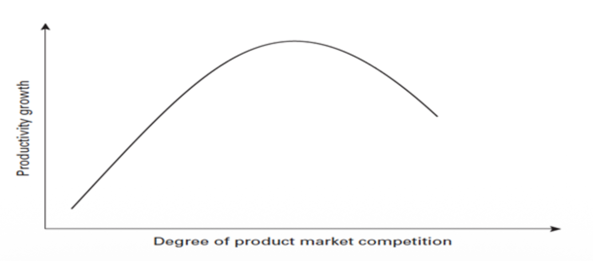

Growth with Creation–Destruction
The Aghion–Howitt model
Growth through creative destruction
The Aghion–Howitt model explains economic growth through Schumpeter’s process of creative destruction. Research firms compete to generate innovations, and these innovations produce technological progress. In this model, technological progress is the source of economic growth.
Each successful innovation introduces a new intermediate good that allows the final good to be produced more efficiently. An intermediate good is an input used in production. The new input replaces the existing one, which becomes obsolete: the same innovation therefore creates a new production opportunity and destroys the economic position of the previous technology.
The incentive to innovate
A successful researcher can patent the innovation and obtain monopoly rents from producing the new intermediate good. These rents are the profits associated with being its exclusive producer. Their prospect motivates research, but they are exposed to destruction by the next innovation.
Model reference: Aghion and Howitt (1992).
Building blocks of the model
The framework has many similarities with Romer’s model studied in the previous chapter. Here, we use a simplified Aghion–Howitt model with only one intermediate good. Three production sectors perform different tasks and operate under different market structures.
Final-good sector
It combines labour and the intermediate input to produce the final good. This sector operates under perfect competition, so firms take input prices as given.
Intermediate-good sector
It uses the final good to produce the intermediate input. The course describes this sector under monopolistic competition; in the one-input version, the producer of the current intermediate good has monopoly power over its supply.
Research sector
It undertakes research to create an innovation. Success is uncertain: its probability increases with current research expenditure and decreases with the technological level inherited from previous research, for a given expenditure. The research sector is described as perfectly competitive.
The household sector
One representative household chooses consumption over time to maximise intertemporal utility. Labour has no disutility in the utility function: working is not represented as a separate cost in utility.
Households and production
Consumption, wealth and optimal growth
The representative household chooses its consumption path $c(t)$ to maximise utility over an infinite horizon:
The fraction inside the integral is utility from consumption at date $t$. The parameter $\varepsilon$ describes the curvature of utility. The discount factor $e^{-\rho t}$ gives less weight to utility received later, with $\rho$ representing the household’s rate of time preference.
Labour and prices taken as given
Labour $L$ is constant: there is no population growth and no disutility of labour. The household takes the wage $w(t)$ and the interest rate $r(t)$ as given. The course works with a constant rate, $r(t)=r$, and states that allowing a time-varying rate would lead to a constant rate when the model is solved.
Consumption must be financed from income and wealth. If $S(t)$ denotes wealth, its accumulation equation is:
The term $r(t)S(t)$ is interest income, and $w(t)L(t)$ is labour income. Both add to wealth, while current consumption $c(t)$ reduces it. The left-hand side is the change in wealth over time.
The transversality condition used in the course
With a constant interest rate, the condition is written in terms of discounted wealth. It requires this discounted amount to approach zero as the horizon becomes arbitrarily distant:
Consumption $c(t)$ is the choice variable; wealth $S(t)$ is the state variable. The multiplier $q(t)$ is the shadow value of wealth. Time derivatives are written explicitly as $dc(t)/dt$ and $dq(t)/dt$.
This result gives the growth rate of consumption on the optimal path. It relates the return from saving, $r$, to the household’s impatience, $\rho$. The parameter $\varepsilon$ determines how their difference translates into consumption growth.
The production function
The final-good sector combines labour with the current intermediate input. The model assumes the following production function, with $0<\alpha<1$:
Output and the intermediate input
$Y_t$ is output in the final-good sector at date $t$, and $x_t$ is the quantity of the intermediate good used in that production.
Technology and labour
$A_t$ is the technology level and $L$ is the fixed quantity of labour. They enter together through $A_tL$. The exponents $1-\alpha$ and $\alpha$ determine how this term and the intermediate input enter production.
The formula links technological progress to production: a better intermediate technology is represented by a higher $A_t$, allowing the final-good sector to produce more efficiently.
Intermediate-good production and GDP
Producing one unit of the intermediate good requires one unit of the final good. Producing $x_t$ units of the input therefore uses $x_t$ units of final output. This one-for-one requirement is an assumption about the production technology.
The final good used to make intermediate inputs must be deducted from final-sector output when calculating GDP. Let $X_t$ denote this use of the final good; with one intermediate input, $X_t=x_t$.
The remaining resources have two uses: household consumption, $C_t$, and research expenditure, $R_t$.
Research uses the final good
There is no physical investment in this simplified model. Research is an investment activity, but it is financed using units of the final good. GDP therefore includes both consumption and the resources devoted to research.
The price of the intermediate input and wages
Under perfect competition in the final-good sector, each input is paid its marginal productivity: the extra final output obtained from an additional unit of that input, holding the other inputs fixed.
The price $p_t$ equals the marginal productivity of the intermediate input. The final good’s price is normalised to 1, so $p_t$ is measured in units of the final good.
Hold $A_t$ and $L$ fixed when differentiating.
The wage $w_t$ equals the marginal productivity of labour in final-good production. It measures the payment for one unit of labour, again in units of the final good.
Hold technology $A_t$ and the intermediate input $x_t$ fixed.
Profit maximisation in the intermediate-good sector
The intermediate-good producer chooses its quantity $x_t$ to maximise profit. Its revenue is $p_tx_t$, while its production cost is $x_t$, because each unit requires one unit of the final good.
The producer faces the demand relationship from the final-good sector: the price it can charge depends on the quantity it supplies. It takes this relationship into account when maximising profit.
Choose $x_t>0$, holding $A_t$ and $L$ fixed, with $0<\alpha<1$.
This is the quantity selected by the intermediate-good producer. For a given production parameter $\alpha$, its scale depends on the technology level $A_t$ and the size of the labour force $L$.
The capital letter $\Pi_t$ denotes the producer’s profit at date $t$. The lower-case $\pi$ is a coefficient determined by $\alpha$; it summarises the constant part of the profit expression. Writing profit as $\pi A_tL$ makes the roles of technology and market size easier to read.
Final-good output and GDP
With the intermediate-good producer choosing the quantity stated above, final-sector output and GDP take the following forms:
The two expressions retain the distinction between total final-sector output and GDP. The factor $1-\alpha^2$ in the GDP formula reflects the deduction of the final good used to produce the intermediate input. In both expressions, the changing technology level enters through $A_t$.
Research and innovation
Success, failure and technological progress
In each period, an entrepreneur can undertake research. The outcome is uncertain. A successful innovation improves the technology level by a factor $\gamma$, whereas a failed research attempt leaves technology unchanged.
If research succeeds
The new technology is $\gamma$ times the previous level. The parameter $\gamma$ describes the size of the technological improvement.
If research fails
No new technology is introduced, so the economy continues with its previous technology level.
The model assumes the following research technology: the probability of success, $\mu_t$, depends on research expenditure $R_t$ relative to the technology level being targeted:
The parameter $\lambda$ represents research efficiency. The ratio $R_t/(\gamma A_{t-1})$ measures research expenditure relative to the technology level that a successful innovation would achieve. The exponent $\sigma$ describes the response of success to this research effort; the course assumes a diminishing response.
More current research raises the probability of success. For a given research expenditure, a higher inherited technology level $A_{t-1}$ reduces the ratio in the formula and therefore makes further progress harder to achieve.
The researcher’s expected profit
A researcher who succeeds introduces the new intermediate good and becomes its producer. This is the reward for successful research: access to the profit associated with the new technology.
The allocation rule in this simplified model
If research fails, production of the previous period’s intermediate good is randomly allocated to another producer, who is not necessarily the previous producer. This is the specific rule used in the version of the model presented here.
A successful researcher earns $\Pi_t^*$, the monopoly profit at the improved technology level:
Research must be paid for even when no innovation is produced. The researcher maximises expected profit:
The researcher trades off a certain expenditure against an uncertain monopoly reward. Spending more improves the chance of success, but also increases the cost of the research attempt.
Optimal spending and the probability of success
Maximising the expected-profit expression gives the following optimal research expenditure, expressed relative to the technology level targeted by innovation:
Hold $A_{t-1}$, $\gamma$, $L$ and the research parameters fixed. The calculation uses $0<\sigma<1$ and positive $\lambda$, $L$, $A_{t-1}$. This is the interior solution used in the course; its implied success probability must be below 1.
Research effort responds to the reward available from innovation: the profit coefficient $\pi$ and market size $L$ enter the researcher’s spending decision alongside research efficiency $\lambda$.
At this research choice, the probability of success is:
At the optimal research choice, the success probability is constant over time when the parameters and population are fixed. It measures how likely innovation is; $\gamma$ determines the size of the improvement if research succeeds.
Three effects of innovation beyond the researcher
The researcher chooses expenditure according to private expected profit. The course identifies three effects of innovation that matter beyond this private calculation.
A benefit larger than the monopoly rent
The monopoly rent received by the successful researcher is smaller than the surplus the innovation generates for the economy. The private reward therefore captures only part of the innovation’s total benefit.
A higher technological level for future research
Each innovation raises $A$. In the research relationship used here, this reduces the success probability of a given future research expenditure. The course describes this as a reduction in the return to future research.
Destruction of the previous innovation
The new intermediate technology makes the previous one obsolete and destroys the rent attached to it. The reward obtained by the new producer is therefore accompanied by a loss for the previous innovation.
Economic growth and competition
From uncertain innovation to expected growth
GDP grows at the same rate as $A$: in the GDP expression, $L$ and the coefficient involving $\alpha$ are fixed. Each period therefore has two possible growth outcomes, depending on whether research succeeds.
The common factor is $\alpha^{\frac{2\alpha}{1-\alpha}}(1-\alpha^2)L$.
Technology moves from $A_{t-1}$ to $\gamma A_{t-1}$. Its proportional increase is:
Technology remains at $A_{t-1}$, so $g_A=0$ for that period.
Expected growth combines the probability of innovation with the size of the productivity improvement:
Read the two ingredients separately
Expected growth combines how likely an innovation is with how much technology improves when it succeeds. It summarises the uncertain outcomes; it does not mean that the same innovation occurs in every period.
What determines the economy’s growth rate?
The course highlights three determinants of expected economic growth in this expression.
Research efficiency: $\lambda$
More efficient research raises the probability of producing an innovation. It therefore raises expected growth through the frequency of successful research outcomes.
The size of innovation: $\gamma$
A larger technological improvement produces a larger increase in productivity when research succeeds. This appears in the growth formula through $\gamma-1$.
Population and market size: $L$
A larger population increases the scale of profits available to the intermediate-good producer. Through the research choice and success probability, this raises expected growth in the model.
Extension to non-drastic innovation
The extension considers innovations that are not large enough to leave the innovator free from competitive pressure. The support describes competitors as being able to imitate the new intermediate good. This competition reduces its price and therefore the profit attached to the innovation.
Because the prospect of profit motivates research, a smaller reward can reduce research intensity. The point made here is that too much competition in the intermediate-good sector can reduce research and the economy’s growth rate.

Policy implications
Should research and development be subsidised?
Because research creates externalities, the decentralised equilibrium is not necessarily as good as the centralised outcome. Private researchers choose their expenditure according to their own expected profits, whereas a centralised assessment takes the effects on the economy into account.
In a creation–destruction model, there can be too much research. Innovation produces both positive and negative externalities: the economy benefits beyond the innovator’s rent, but innovation also affects future research and destroys the previous innovation.
The implication for subsidies
The presence of externalities does not, by itself, establish that private research is insufficient. The positive and negative effects explain why the course does not give an unconditional argument for increasing research through subsidies.
What do we know about the return to research?
The course reports that the private return to R&D is probably quite high in rich countries, at around 20–30%, and describes it as higher than the return to physical investment. The private return is the return received by those undertaking the research.
The total return also includes benefits beyond those received privately. The gap between total and private returns is difficult to quantify. The studies cited in the support suggest that the total return can be up to three times the private return; this is an empirical estimate, rather than a fixed multiplier in the model.
Studies cited in the course: Sveikauskas (2007) and Bloom et al. (2013).
Other policies and the level of development
Protect people, not jobs
The principle of flexicurity is to protect people while allowing jobs and production activities to change. In the context of creative destruction, protection is directed towards workers rather than towards preserving every existing job.
The institutions that promote growth depend on the economy’s level of development. The course distinguishes countries catching up with existing technologies from countries already at the technological frontier.
Growth requires adapting existing technologies to the country. Large firms can help carry out this adaptation because they benefit from economies of scale. Since the risk is relatively limited, long-term relationships between banks and firms are suited to financing these activities.
Growth comes from risky research activities. Venture capital is therefore better suited than bank finance to these activities. The government cannot reliably pick the future winner, so competition is needed both in research and in goods and services markets.
Reference cited in the course: Acemoglu, Aghion and Zilibotti (2006).